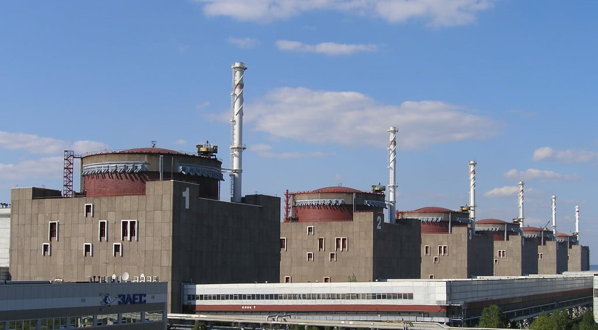

Захоплення міста
Шантаж і загроза ЗАЕС
Спротив енергодарців
Обстріли Енергодара
Місія МАГАТЕ
Окупація та зміна інфопростору
Захоплення міста
Шантаж і загроза ЗАЕС
Спротив енергодарців
Обстріли Енергодара
Місія МАГАТЕ
Окупація та зміна інфопростору
“Ми в безпеці, в нас АЕС, сюди не зайдуть, тут не стрілятимуть, з таким не жартують” — думали мешканці Енергодара. Але вони помилилися. Ми простежили, що відбувалося на ЗАЕС та в Енергодарі від часу захоплення міста.
Спільний проєкт. Запорізький центр розслідувань: збір даних, текст. Texty.org.ua: візуалізація, сторітейлінг та консультації зі збору даних.
Енергодар з’єднано із Запоріжжям єдиною асфальтованою дорогою вздовж Каховського водосховища до Василівки, там він з'єднується з трасою Харків — Сімферополь. Коли росіяни захопили Мелітополь, до Василівки їм залишалося 60 км. Як тільки вони її зайняли, Енергодар став приреченим. Інше угруповання російських військ рухалося з херсонського напрямку.
Працівники військкомату й поліція вийшли з Енергодара ще 25 лютого — добре, що забрали документи. У місті залишилося лише кілька десятків нацгвардійців, які охороняли ЗАЕС і патрулювали місто. Зброю для місцевої тероборони мали привезти із Запоріжжя тією самою єдиною дорогою з Василівки, проте не встигли. Частина тероборонівців поїхала зустрічати транспорт зі зброєю, отримала її й дала окупантам бій уже у Василівці. Потім вони обороняли Запоріжжя.
Уранці 26 лютого росіяни захопили село Велика Білозерка, що за 30 км на південь від Енергодара.
Місцеві жителі вирішили боронити Енергодар навіть без зброї: звели блокпост на в’їзді до міста. Упродовж трьох днів близько 10 тис. мешканців міста, за свідченням мера Енергодара Дмитра Орлова, виходили до блокпоста, щоб зупинити російську армію мирними протестами. Це майже всі дорослі, які залишалися в місті й не перебували на роботі (більшість з них працює на АЕС, ТЕС чи обслуговує цю інфраструктуру).
Енергодарці вийшли на шлях, що веде в місто, щоб зупинити російські війська.
Фото Дмитра Орлова
3 березня росіяни врешті почали стріляти по пікетувальниках і зайшли в місто, обстрілюючи дорогою цивільні будівлі в центрі Енергодара.
Увечері вони рушили на ЗАЕС.
Карта про захоплення Енергодара та ЗАЕС
У ніч на 4 березня 2022 року весь світ стежив за онлайн-трансляцією з камери спостереження, розташованої на одній з будівель ЗАЕС. У темряві палала пожежа. Ніхто не розумів, що відбувається й чи не станеться новий Чорнобиль.
Усю ніч над Енергодаром гуділа сирена. “Потім сказали, що ці сирени просто перегоріли під шосту ранку” — розповідає Ольга, місцева жителька. Цей моторошний звук і страх посилювала невідомість. Енергодарці стежили за загравою над станцією, знали, що пожежників туди не пускають, і думали про радіацію й опромінення. Бомбосховищ та укриттів у місті немає. На випадок аварії на станції в мирний час було передбачено евакуаційні автобуси.
З військових сил у місті стояв лише загін Нацгвардії, який охороняв АЕС і патрулював місто, бійці мали стрілецьку зброю, гранатомети та, “здається, один бронеавтомобіль «Козак»”, — згадує начальник цеху електричних мереж ВП ЗАЕС Іван Петухов.
Наші спробували дати бій.
“Росіяни просто «розкришили» навчально-тренувальний центр, звідки відстрілювалися нацгвардійці. Потім ударили з великокаліберної зброї по головному корпусу… просто показували свою силу”, — вів далі Петухов.
Навчально-тренувальний центр ЗАЕС після нічного бою за ЗАЕС.
Фото: Енергоатом
За свідченнями одного з місцевих активістів, під час штурму ЗАЕС загинуло троє бійців Нацгвардії з її охоронного загону і ще п'ятьох-шістьох було поранено. 30-40 осіб захопив у полон інгушський СОБР — саме вони атакували станцію. Місцеві розповідають, що полонених вивезли в посадку неподалік, роздягли до білизни, постріляли над головами, взяли розписку, що ті більше не воюватимуть, і відпустили в Енергодар. Комусь із них вдалося вибратися на підконтрольну Україні територію, когось захопили в полон і вивезли в Крим пізніше — вже з Енергодара.
Строковиків НГУ, які патрулювали місто, окупанти теж захопили в полон і спочатку використовували на громадських роботах, а потім вивезли в Крим. Їх повернули під час обміну 22 листопада.
Тієї ночі вигоріли другий, третій і четвертий поверхи навчально-тренувального центру поблизу ЗАЕС. Пожежникам дозволили загасити пожежу лише через кілька годин, це вдалося зробити о 6 ранку 4 березня.
З цього бою почалася історія ядерного шантажу, який здійснює Росія. Територія ЗАЕС стала гарнізоном, де розміщено близько 500 російських військових, важку техніку та боєприпаси. Зі станції росіяни обстрілюють вільні українські території. Заручниками армії РФ стали 3 тис. працівників станції та близько 20 тис. жителів Енергодара, який росіяни обстрілюють задля провокацій.
Наприклад, про одну з російських атак під чужим прапором, у яких Росія звинуватила ЗСУ, 12 липня повідомив у своєму звіті Інститут вивчення війни (ISW).
Росіяни тероризують український персонал станції: змушують підписувати контракти з Росатомом, викрадають, катують, убивають. Найбільшу небезпеку сьогодні становить регулярне відімкнення ЗАЕС від української енергомережі після російських обстрілів ліній електропередач. Дизельні генератори тоді стають останніми запобіжниками ядерної катастрофи.
Упродовж березня 2022 року тисячі енергодарців регулярно виходили на вулиці вже окупованого міста на мітинги під українськими прапорами. Масові демонстрації відбулися 9 березня, в день народження Тараса Шевченка, 20 і 28 березня, а також 2 квітня — на підтримку України та в знак протесту проти викрадення заступника мера міста Івана Самойдюка.
Мітинг в Енергодарі 20 березня.
Фото: Дмитро Орлов
2 квітня солдати Росгвардії почали хапати й тягнути мітингарів до автозаків та обстрілювати зібрання з мінометів.
Після встановлення окупаційної влади російські спецслужби шукали й викрадали учасників демонстрацій. У цьому їм допомагали місцеві колаборанти.
4 березня 2022 року на Запорізькій атомній станції (ЗАЕС) у робочому стані перебував лише енергоблок № 4. Енергоблок № 1 був на планово-попереджувальному ремонті. Енергоблоки № 2 і № 3 — відімкнено від мережі та переведено в безпечний стан. Енергоблоки № 5 і № 6 — переведено в безпечний стан.
Саме енергоблоки № 5 і № 6 регулярно відмикаються від енергомережі через російські обстріли ліній електропередач, і тоді спрацьовує останній запобіжник ядерної катастрофи — дизельні генератори. За час окупації ЗАЕС тричі було повністю знеструмлено: 25 серпня, 2 жовтня і 2 листопада. Наприкінці 2022 року всі шість реакторів Запорізької АЕС зупинено, але вони й досі споживають електроенергію з української енергосистеми. Росіяни блокують їх підключення.
Опівночі з камери спостереження, розташованої в адмінбудівлі а на території ЗАЕС, почалася пряма трансляція захоплення станції російською армією. Камера пропрацювала кілька годин, доки росіяни захопили станцію.
Російський снаряд влучив в енергоблок № 1 і пошкодив обшивку реактора. Два снаряди влучили поблизу сховища відпрацьованого ядерного палива, як повідомив Енергоатом.
15 березня керівник НАЕК “Енергоатом” Петро Котін заявив, що на території ЗАЕС перебуває близько 400 російських військових, 50 одиниць техніки і багато вибухівки та зброї.
Червневі супутникові знімки (з сайту Planet) свідчать, що російські військові звели фортифікаційні споруди навколо ЗАЕС. Про це 24 червня також заявив мер Енергодара. Подальші знімки демонструють активне використання й розростання укріплень: у промзоні вздовж дороги з Енергодара до ЗАЕС, на узбережжі біля станції, біля пожежної частини.

29 червня російські військові закатували водолаза гідроцеху ЗАЕС Андрія Гончарука. Його змушували пірнати в охолоджувальний басейн ЗАЕС. Вимога — осушити охолоджувальний басейн нібито для перевірки його чаш щодо наявності закладеної раніше зброї — провокація, яку вигадали росіяни.
Військові наказали адміністрації ЗАЕС відчинити машинні зали на енергоблоках № 1, № 2 і № 3, щоб розмістити там свій військовий арсенал. У машинній залі енергоблоку № 1 зібрано щонайменше 14 одиниць важкої військової техніки з боєкомплектом, зброя та вибухівка, як повідомив Енергоатом. Пізніше інформацію про розташування військових і боєкомлекту в машинних залах станції підтвердили джерела Insider на ЗАЕС і співрозмовник BBC — інженер, який працював там під час окупації.

22 липня український дрон-камікадзе завдав удару по російському військовому наметовому містечку та техніці, розташованим навпроти енергоблоку № 1. Влучив у три зенітні установки та БМ-21 "Град". Троє військових загинули, 12 було травмовано.
5 серпня The Insider оприлюднив відео з доказами переміщення військової техніки біля реакторів.
Також розслідувачі з посиланням на джерела повідомили про замінування машинної зали енергоблоку № 1 і території навколо ЗАЕС; про розміщення “Градів” поблизу села Водяне; про боєприпаси, що зберігаються біля енергоблоків, усередині й під естакадами.
Про естакади, під якими росіяни зберігали військову техніку, згадував в анонімному інтерв’ю BBC один з інженерів станції. “Наприклад, під естакадою біля спецкорпусу № 2 іноді стоять БМ «Град» з боєкомплектом”, — повідомив він. Також розповів, що бачив російські артилерійські установки на майданчику, де зберігаються важкі металеві конструкції, як-от свіжі парогенератори.
5 серпня почалися обстріли ЗАЕС, націлені на знищення енергетичної інфраструктури, що поєднує станцію з українською енергомережею. О 14:30 було зафіксовано влучання у високовольтну лінію зв’язку 330 кВ ВРП автотрансформатора ЗАЕС, повідомила Запорізька ТЕС.
6 серпня Енергоатом повідомив про влучання російських боєприпасів по майданчику ЗАЕС поблизу сухого сховища відпрацьованого ядерного палива(ССВЯП), витік якого може спричинити екологічну катастрофу. У сховищі зберігається 174 контейнери по 24 збірки відпрацьованого ядерного палива. Через обстріли пошкоджено датчики радіаційного моніторингу, що мають сповіщати про витік радіації.
Обстріл ЗАЕС: Енергоатом повідомляє про п’ять “прильотів” у районі комендатури станції — неподалік дільниці зварки та сховища джерел випромінювання. Пошкоджено насосну станцію господарсько-побутових стоків.
22 серпня до ремонтної зони станції росіяни додатково завезли два БТР та шість спецвантажівок, повідомляє Енергоатом. Загалом на території станції було дислоковано понад 40 одиниць військової техніки. Біля енергоблоку № 1 — 16, біля № 2 — 7. Ще 12 загнали під естакаду.
25 серпня ЗАЕС уперше повністю вимкнули. Унаслідок пошкодження повітряної лінії ПЛ-750 кВ “Дніпровська” вимкнено енергоблоки № 5 і № 6.
26 серпня снарядом пробито дах спецкорпусу № 1, є влучання неподалік спецкорпусу № 2 та естакади.
1 вересня представник росіян пояснив директору МАГАТЕ Рафаелю Гроссі, що снаряд у мить приземлення розвертається на 180 градусів навколо своєї осі, тому він стирчить із землі так, ніби прилетів з окупованої росіянами території.
У ніч з 2 на 3 вересня росіяни обстрілювали Нікополь з локації, близької до ЗАЕС, про що свідчить відео, оприлюднене The Insider.
Вибух міни на периметрі ЗАЕС. 29 вересня на лінії подачі напруги на азотно-кисневу станцію від енергоблоку № 6 стався вибух. “Причина в тому, що периметр ЗАЕС заміновано російськими військовими, — повідомляє Енергоатом. — Уже було шість випадків, коли на мінах підривалися собаки, лисиці й дикі кабани”.
30 вересня росіяни викрали гендиректора ЗАЕС Ігоря Мурашова й завезли його до катівні “Яма” (за повідомленням The Wall Street Journal). Його звільнили з полону 3 жовтня завдяки широкому розголосу та втручанню гендиректора МАГАТЕ.

26 жовтня стало відомо, що в охолоджувальному басейні від переохолодження загинула риба, яка виконувала санітарну функцію та забезпечувала чистоту охолоджувальних трубок конденсатора турбіни. Тепла вода не потрапляє у ставок-охолоджувач через зупинку ЗАЕС.
2 листопада ЗАЕС було знеструмлено через обстріли високовольтних ліній зв’язку з українською енергосистемою, почали працювати дизель-генератори. Енергоблоки № 5 і № 6 переведено в холодний стан.
7 грудня Енергоатом повідомив, що росіяни розмістили кілька реактивних систем залпового вогню (РСЗВ) “Град” біля енергоблока № 6, поруч із територією станційного сухого сховища відпрацьованого ядерного палива, де раніше в таємному режимі будували деякі “захисні споруди”.
"На станції тривають роботи з випробування та введення в експлуатацію пересувних котлів на дизельному пальному, щоб запобігти замерзанню критичних систем ЗАЕС у зимовий період", — ідеться у звіті МАГАТЕ за 13 грудня. Мобільні дизельні котли потужністю 1-3 МВт встановлені та працюють на одному з енергоблоків, ще декілька розміщено в інших місцях на майданчику.
З середини березня 2022 року російська армія почала обстрілювати населені пункти на протилежному від станції березі Дніпра, користуючись територією ЗАЕС як щитом. Експерти Conflict Intelligence Team підтвердили, що ракетний обстріл здійснюють з території в районі ЗАЕС.
Зона досяжності російської зброї, розміщеної неподалік Дніпра
Коли російська армія захопила атомну електростанцію, вона порушила міжнародні домовленості про невикористання ядерних об’єктів у воєнних цілях.
Тепер Росія звинувачує Україну в обстрілах ЗАЕС, але не надає неспростовних доказів, категорично відмовляється демілітаризувати станцію та створити навколо ЗАЕС зону безпеки.
1 вересня 2022 року. Представник росіян переконує гендиректора МАГАТЕ, що уламок снаряда, який стирчить на території ЗАЕС поблизу сховища відпрацьованого ядерного палива, випустила українська армія, але при приземленні він розвернувся на 180 градусів і саме тому схоже на те, наче прилетів з окупованої російською армією території.
Скріншот з відео, оприлюдненого Андрієм Цаплієнком.
Супутникові знімки свідчать про розростання бойових позицій навколо ЗАЕС упродовж літа-осені 2022 року. Працівники станції, які залишилися там працювати або виїхали вже після захоплення її росіянами, анонімно розповідають про розміщення російських вогневих позицій, військової техніки, солдат і боєприпасів на території ЗАЕС. Джерело ТЕКСТІВ стверджує, що росіяни зайняли майже всі приміщення на території станції, постійно переміщують і маскують свою техніку
Регулярні обстріли ЗАЕС почалися 5 серпня 2022 року. Вони спрямовані на руйнування високовольтних ліній, що пов’язували ЗАЕС з українською системою. А також на створення “картинки” для російської пропаганди про нібито українські обстріли. Працівники станції розповідають, що росіяни попередньо детально з’ясовували, як працює станція і що де розташовано. Щоб бити так, аби обстріли не завдавали станції реальної шкоди — окрім руйнування згаданих вище електромереж.
Чому б ці мережі просто не демонтувати, адже вони йдуть по окупованій росіянами території? Для Росії важливий пропагандистський чинник і обстріли, природу яких спостерігачам із віддалених столиць установити важко — це стає вдалим приводом в усьому звинувачувати Україну.
До 8 серпня після обстрілів уціліла лише одна з трьох таких ліній — “Дніпровська”, перекинута через Каховське водосховище.
Вони провокують “блекаут” на станції, щоб потім “урятувати” АЕС від масштабної аварії — через підключення до російської енергосистеми.
“Лише впродовж серпня третій енергоблок тричі аварійно зупинявся і його тричі запускали — без обстежень, без з'ясування причин зупинок і висновків, як того вимагають регламенти”, — розповідає Ольга Кошарна, ексчленкиня Колегії Державної інспекції ядерного регулювання України. Аварійні відключення після обстрілів ліній електропередач тривали всю осінь.
Про плани “інтегрувати” не лише ЗАЕС, а й Каховську ГЕС та всю сонячну й вітрогенерацію на окупованих територіях ще у травні говорив заступник голови уряду Росії Марат Хуснуллін під час візиту до окупованого тоді Херсона. Також він згадував про відновлення підірваної ще у 2015 році єдиної магістральної високовольтної лінії, що пролягає через Джанкой і через ЗАЕС могла б постачати електроенергію до окупованого Криму.
Карта енергомережі навколо ЗАЕС
Для підтримання АЕС у безпечному стані необхідна електроенергія, адже навіть із виключених енергоблоків потрібно завжди відводити тепло, яке є наслідком ядерної реакції. Інакше нутрощі почнуть плавитися, може статися водневий вибух — те, що спричинило аварію на Фукусімі. Тому обстріли ліній електропередач можуть стати причиною ядерної катастрофи. На АЕС є дизельні генератори, які автоматично вмикаються, коли подача електроенергії зупиняються, але це останній запобіжник від катастрофи. Часте його використання — це не надто надійно.
“Україна після аварії на Фукусімі провела стрес-тести всіх АЕС і взяла до уваги уроки фукусімської аварії — за методологією ЄС, — коментує Ольга Кошарна. — Передбачали ймовірність впливу на ЗАЕС повені та землетрусу. Укріпили герметичну оболонку, поставили додаткові фільтри для затримання радіонуклідів, хімічні рекомбінатори водню під гермооболонкою — на випадок збільшення концентрації водню.
Зазвичай рівень безпеки розраховують на випадок падіння легкого літака, землетрусу, повені, урагану, торнадо. Обстріл не описують у звітах з безпеки як подію, яка може становити загрозу.
Які території буде забруднено, якщо станеться аварія на АЕС? Грубо кажучи, у разі аварії влітку «летіло» б на південь України, потім на Болгарію, Румунію, Чорне море та Туреччину. Восени вітри були переважно західними — тоді, відповідно, летіло б на Донецьку область і Краснодарський край. Якщо вітер південно-західний — на вільну Україну, Білорусь і Росію”.
У своєму звіті на 57 сторінок МАГАТЕ визнала, що в результаті захоплення й контролю росіянами ЗАЕС порушено всі ключові засади ядерної безпеки. Коротко по пунктах:
1. Пошкоджено будівлю АЕС у різних місцях.
2. Пошкоджено системи безпеки на допоміжних виробництвах.
3. Російські військові обмежують доступ персоналу до окремих ділянок станції та здійснюють постійний психологічний тиск.
4. ЗАЕС не підтримує сталого зв'язку, як того вимагають стандарти, з галузевим регулятором “Енергоатомом” і самим МАГАТЕ.
5. Через логістичні проблеми ЗАЕС не має стійкого постачання дизельного пального для резервних генераторів.
Росіяни демонструють представникам МАГАТЕ дірку від снаряда у даху спецкорпусу №1, стверджуючи, що це результат обстрілів ЗАЕС українськими збройними силами.
Фото: МАГАТЕ
1 вересня під час короткого візиту на ЗАЕС місію МАГАТЕ на чолі з гендиректором Рафаелем Гроссі всюди супроводжували окупанти, які поширювали дезінформацію щодо обстрілів станції. Також вони організували “листи від небайдужих громадян”, які скаржилися інспекторам на обстріли ЗСУ. Двоє працівників МАГАТЕ залишаються на станції після від’їзду Рафаеля Гроссі. Очільник МАГАТЕ водночас докладає дипломатичних зусиль, щоб створити демілітаризовану зону на ЗАЕС і навколо станції.
“Росіяни зацікавлені в безпечній і робочій атомній станції, — пояснює логіку дій окупантів Олена Кошарна, — щоб постачати електроенергію до Криму, де зараз наявний дефіцит”.
Адже кримські теплові електростанції зі “скандальними” турбінами Siemens, запущені у 2018 році, працювали на газу, що надходив з родовищ, де були "вишки Бойка” — ЗСУ знищили їх ще в червні 2022 року.
Решту потужностей ЗАЕС вони хотіли б віддавати в енергосистему РФ, щоб постачати у Краснодарський край. ЗАЕС для росіян цінна ще й тим, що використовує паливо Westinghouse, яке ефективніше за російське.
Працівники станції остерігаються, що росіяни могли вивезти свіжі й відпрацьовані збірки американського палива Westinghouse до Росії, щоб розібрати й дослідити особливості конструкції.
На майданчику біля ЗАЕС розташоване сухе сховище відпрацьованого палива, побудоване за американською технологією, та система фізичного захисту, яку США постачали від 2014 року. Це сучасні технології, яких росіяни не мають і які можуть їх цікавити.
У цьому також причина, чому окупанти тероризують український персонал станції й погрозами та тортурами змушують їх працювати на “Росатом” — їх неможливо замінити росіянами.
Над проєктом працювали Сергій Сидоров, Маргарита Огнева, Вероніка Хорольська, Катерина Рождественська, Надя Кельм, Євгенія Дроздова, Денис Губашов, Інна Гадзинська
Матеріал підготовлено за сприяння Фонду розвитку ЗМІ посольства США. Грантодавець не відповідає за думки та інформацію, викладені у статті.